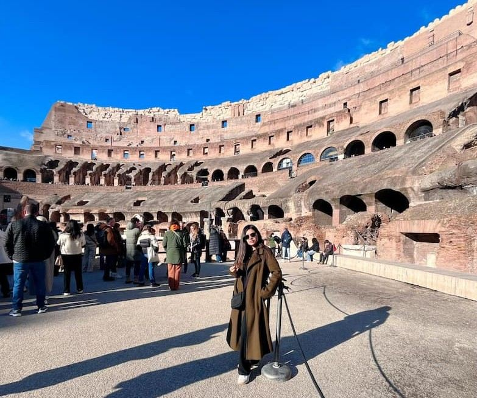

My favorite city is Rome, Italy. It is a beautiful city with a rich history, amazing architecture, and delicious food. In this photo, you can see the Colosseum, one of the most famous landmarks in the world. It was built nearly 2,000 years ago and was used for gladiator contests and public events.
